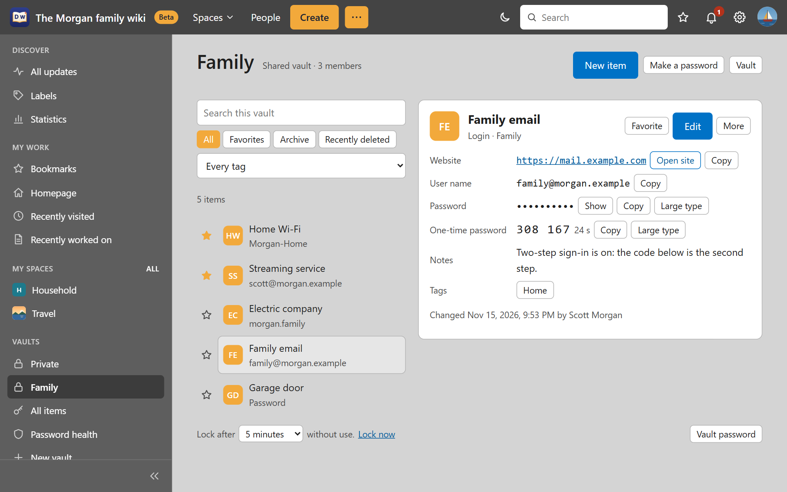
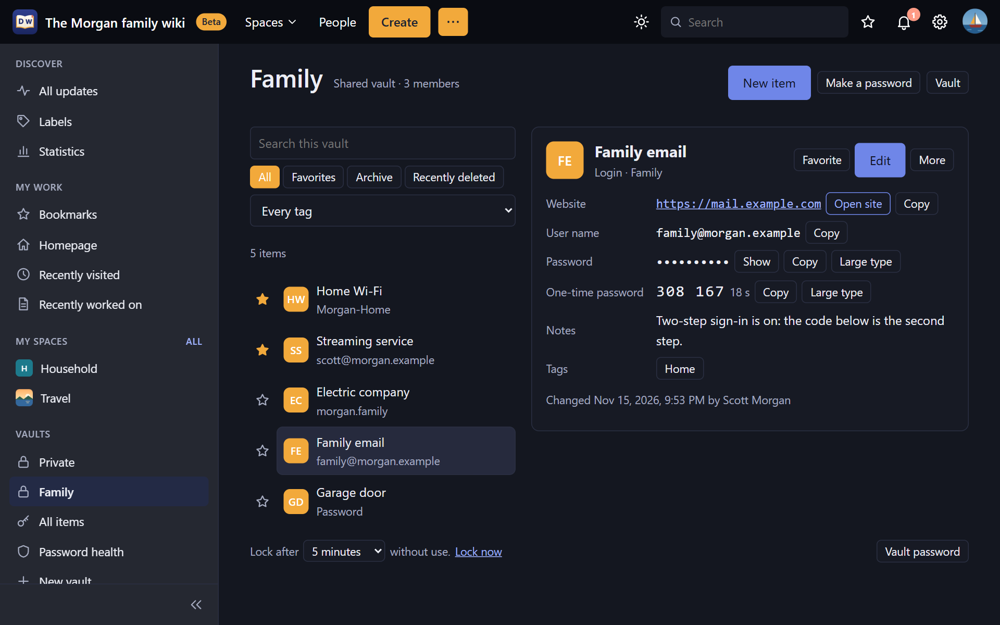

Encrypted where you type
Items are locked with your vault password and a Secret Key that stays on your devices (AES-256 and Argon2id). The wiki's PC and its backups only ever hold scrambled data. Your Emergency Kit keeps what you need to get back in.
Everything worth keeping safe
Logins, credit cards, bank accounts, passports, Wi-Fi, software licenses and more than a dozen other kinds, with tags, favorites, a password generator and attached documents. Earlier versions and old passwords are kept, and a Wi-Fi item shows a QR code a phone can join with.
Two-step codes built in
Keep a site's one-time codes with its login and see each code with the seconds it has left. Scan the site's QR code from a screenshot, your screen or a phone's camera, or from the tray icon in one click, and move your codes over from Google Authenticator.
Password health
See which passwords are weak, reused or found in a data breach, which sites offer two-step sign-in you haven't set up, and what's about to expire. The breach check sends only the first five characters of a scrambled form of each password, and an admin can turn it off.
Quick Access from the tray
Press Ctrl+Shift+Space anywhere in Windows, find a login and press Enter to copy its password. Unlock it with Windows Hello. What you copy stays out of Windows' clipboard history and is cleared after 90 seconds.
Passkeys, and help when you forget
In a browser, unlock with a passkey on your iPhone, Android phone or security key instead of typing the vault password. Forgot it anyway? If you allowed it, an admin can help you back in with a new vault password.
Bring your passwords
Import from 1Password, Bitwarden, LastPass, KeePass, KeePassXC, Dashlane, Chrome, Edge and Firefox. Files are read and encrypted in your browser, so plain passwords never reach the wiki. Export to a file whenever you like.
See it for yourself
Download the free beta and open the demo wiki from setup or the tray icon: it’s this wiki, and nothing you do there is kept. See pricing for after the beta, or go back to all the features.